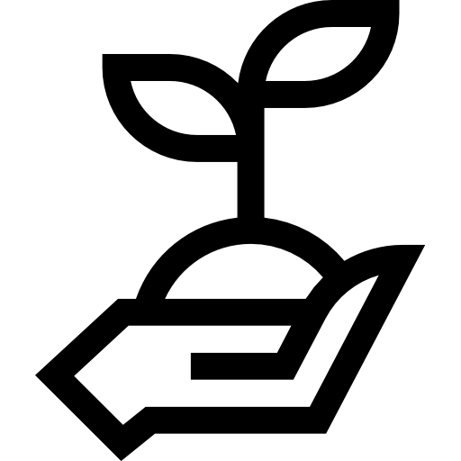
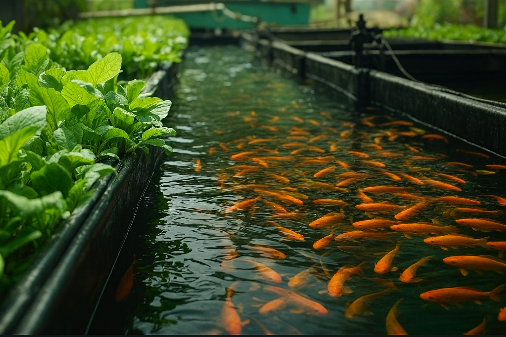

Aquaponia üíß
Uma solução para o futuro!
Principais explicações
Sobre Aquaponia
Conheça as grandes vantagens que este sistema pode fazer no seu negócio
Economia de até 90% de água
Ótima escolha para quem quer reduzir custos hídricos.
Comida saudável
Produção livre de agrotóxicos para uma alimentação melhor.

Autossustentável
Integra peixes e plantas em um ciclo que favorece ambos.
Tecnologia e eficiência
Enquanto se fala em escassez, a aquaponia entrega produtividade.
Portfólio
Exemplo 1
Sistema Aquaponico em larga Escala
Exemplo 2
Morangos Gerados pelo sistema de Aquaponia
Exemplo 3
Contato de Agricultores com Aquaponia Maceio-AL
Por que escolher a Aquaponia?
Dupla fonte de renda
Apesar do investimento inicial, o sistema tende a se pagar ao longo dos anos, gerando duas frentes de receita.

Independe de solo
Funciona com substratos e ocupa pouco espaço, ampliando as possibilidades de implantação.
Variedade de plantações
Aproveite o uso eficiente do espaço para cultivar diversos vegetais no mesmo sistema.